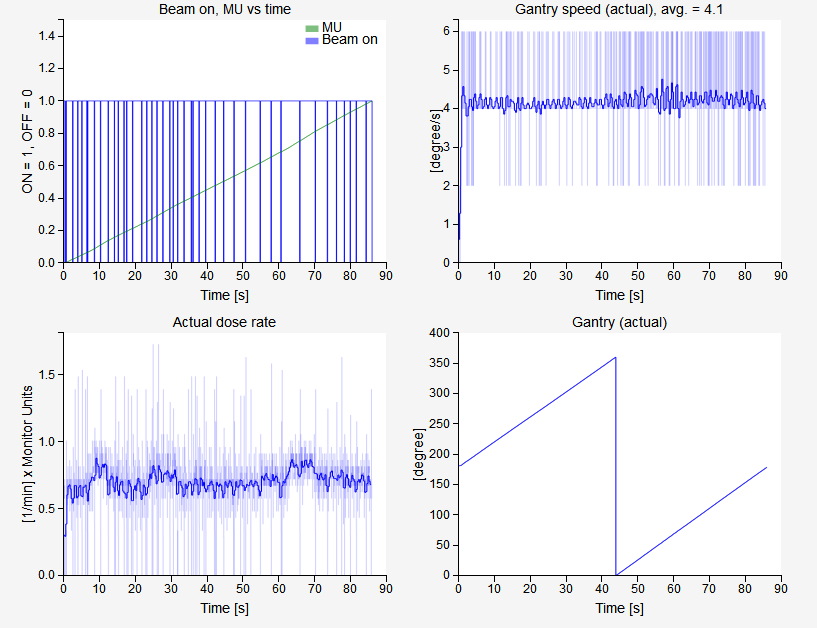

Dynalog module¶
This module is used to analyze Dynalogs. It is meant to be used for everyday tracking of MLC dynamics during treatment. To be able to use it, several steps must be followed.
Note
Trajectory log analysis is not available in this version of QAserver.
The module analyze_dynalogs.py must be used to fill the database with dynalogs. This module reads dynalogs from a dedicated folder (local or network), analyzes them and saves them into a special QAserver database so that they can be reviewed later.
You should set you MLC controller to make a copy of each dynalog to a network folder so that you will be able to access it remotely. It is best to do the analysis in the evening so that you collect all dynalogs of the day.
You can configure QAserver to send you an email containing a short summary of the analysis.
Please read the configuration instruction carefully in order to set up the dynalog module.
How to start?¶
Collect a couple of dynalogs and save them to a local folder. In config.ini set this path to DYNALOG_REPOSITORIES. Define a name for your repository, say REPOSITORIES_LABELS = Linac1. Set SEND_EMAIL = False. Then run the analyze_dynalogs.py module.
After a successful run, you should have dynalogs in the database.
How to get data?¶
1. I want to get all patients/records for a particular date
Click Filter patients by date and chose the date. Patient dropdown will be populated. In the Record dropdown you can then select the record you want.
2. I want to get all the patients for a particular date and a particular folder (ie machine)
In the select folder dropdown chose the appropriate folder and repeat 1.
3. I want to get all the records for a particular patient
Search the patient with the Filter patient list. You can filter the results with Filter patients by folder.
4. I want to get all the patients from a particular folder (ie. machine)
Clear the Filter patient list, select the appropriate Filter patients by folder and click Go!
5. How to find out what records have been saved last?
Click the Last upload button.
6. How to get a summary of all the records for a particular date?
Select a date and click the For selected date button.
7. How to analyze one particular dynalog?
Chose the record and select the desired field (Select field for analysis). Select the appropriate MLC type (Select MLC) and then click Analyze.
Record data¶
- Field
The number of the field. If dynalog does not contain a record of the field id, the value will be “NA”.
- Gantry
Gantry angle or arc starting angle.
- Time
Time of treatment.
- Snaps
Number of snapshots. Snapshots are 50 ms apart.
- Holds
The number of times that the MLC controller demanded beam hold.
- Max RMS [mm]
Maximum RMS over all snapshots and all leaves.
- Max RMS2 [mm]
Similar to MAX RMS, except that only snapshots when beam was ON and there were no holdoffs are included in the calculation.
- Max DIFF [mm]
Maximum difference between planned and measured leaf positions, calculated for all leaves and all snapshots.
- Max DIFF2 [mm]
Similar to Max DIFF2, except that only those snapshots are included when beam was ON and there were no beam holdoffs.
- RMS avg [mm]
Average RMS for moving leaves only (when beam was ON and there were no holdoffs). Leaf is moving if the standard deviation of its position over all snapshots is lower than 0.1 mm.
- gamma avg
Average gamma.
- gamma<1 [%]
Percentage of points that have gamma smaller than 1.
- dd/dta/thresh/res
Settings used for gamma calculation: dose difference, distance to agreement, threshold, resolution. See your configuration file.
- Folder
Name or label of the folder from where dynalogs were taken. Normally this would be the name of your linac.
Analysis¶
QAserver returns Pylinac’s analysis with some additional features.
MLC¶
Here you can observe planned and actual MLC movements. If you don’t see the animation, then there is a problem with your installation of Bokeh.
The speed of the leaves is calculated as the first time difference of leaf position. It is severely prone to noise. In future release it will be calculated more robustly.
Red bars correspond to bank A and blue bars correspond to bank B.
Beam status has two signals: CONT/STOP and ON/OFF. The first one is the beam hold off, the second one is beam on or beam off.

Fluence¶
Actual and planned fluence maps are presented. Besides the gamma map a dose difference map is also shown.

Error histogram¶
Four histograms are shown: RMS and RMS2, MAX DIFF and MAX DIFF2.
Dose rate¶
The first graph shows how beam status is changing over time and how meterset weight is adding up.
The second plot is the gantry speed. Gantry speed is not calculated with first-order difference. Instead, gantry angle as a function of time (snapshot) is filtered with the savgol filter using every other point out of the whole snapshot collection. Then the ordinary first order difference is calculated using every third point of the filtered function. This plot is shown in dark blue color. Underneath you will see a faint blue plot, that is the first-order difference of gantry position. It should be extremely noisy.
The dose rate graph is calculated similarly to gantry speed.